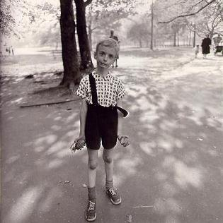

Child with Toy Hand Grenade in Central Park, N.Y.C.
Diane Arbus · 1962 · Photograph
In copyright. Look and learn: shown for study, not for download.
The boy is Colin Wood, son of the tennis player Sidney Wood. The contact sheet shows Arbus moving around him for a run of frames, and she chose the one with the clenched hand and the face. The Museum of Modern Art hung it in 1967 as Exasperated Boy with Toy Hand Grenade, in the New Documents show with Lee Friedlander and Garry Winogrand. Arbus made seven known prints of it; one sold at Christie's in 2005 for $408,000.